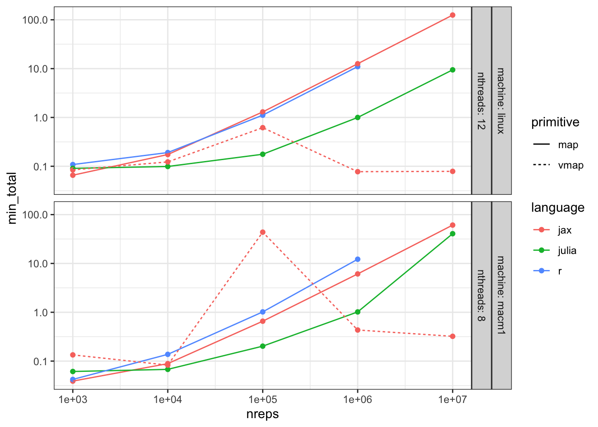
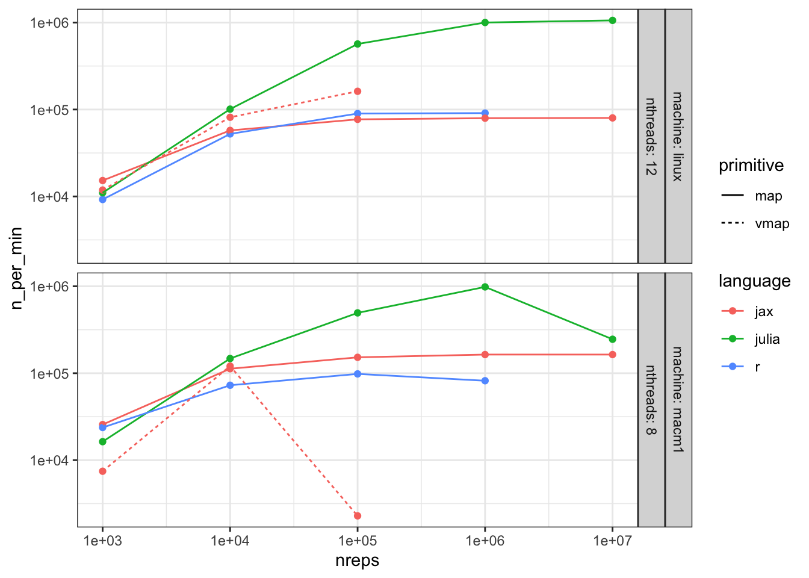

Simulation experiments are important when evaluating methods but also for applied work in for example power analyses (e.g. Amsterdam, Harlianto, et al. 2022) or sensitivity analyses (e.g. Amsterdam, Verhoeff, et al. 2022). When using simulations to support scientific claims, the more experiments the better. Being able to perform simulation experiments faster allows researchers to:
test bigger (or finer) experimental grids
attain lower variance by having more repeated experiments
test new ideas faster
The R language has been a popular language among many biostatisticians for a long time, but it is not generally considered the top performing language in terms of speed. In recent years, JAX (developed by Google) and Julia have arisen as general scientific computation frameworks. JAX and Julia have grown in popularity both in the neural network community as in other scientific communities (e.g. “DifferentiableUniverseInitiative/Jax_cosmo” 2024; “SciML: OpenSourceSoftware for ScientificMachineLearning” n.d.). In this blog post I’ll compare R with JAX and Julia for a simple simulation study setup with logistic regression.
We’ll look at the following comparisons:
R single thread
R multi-threaded
JAX
Julia single thread
Julia multi-threading
JAX and Julia vs R: a high level overview
JAX is a rising star in computer science and natural sciences. Without going in too much details, JAX works by translating python code into an intermediate language that can be run very efficiently on different hardware backends (CPU, GPU, TPU), possibly with just-in-time compilation (JIT). JAX prides itself on providing composable transformations for vectorization (vmap), paralellization (pmap) and automatic differentiation (grad), all compatible with jit. In R, most of the heavy lifting in terms of computation (such as fitting a logistic regression model) is implemented in high-speed languages such as C++ or Fortran. The usual R-code merely provides an interface to these languages and allows the user to feed in data and analyze results. Whereas using JAX and R means working with two languages (one language to write accessible code, another to do fast computation), Julia is a just-in-time compiled language where such translation is not needed.
The basic setup
We’ll use a simple logistic regression simulation setup, where for each observation:
So \(y\) is the sum of elements of \(\mathbf{x}_{\text{full}}\) and the observed \(\mathbf{x}_{\text{obs}}\) contains only the first 9 out of 10 elements of \(\mathbf{x}_{\text{full}}\).
where \(\boldsymbol{\beta} = [\beta_1,\ldots,\beta_9]\) is a 9-dimensional parameter vector that is to be estimated (we’re excluding the usual intercept term). We’ll generate nrep independent datasets and estimate \(\boldsymbol{\beta}\) in each one, and finally calculate the average parameter estimates \(\frac{1}{\text{nrep}}\sum_{i=1}^{\text{nrep}}\boldsymbol{\beta}^i\).
Hardware
The hardware I had available for this comparison is:
macm1: 2020 macbook air M1, 8Gb RAM, 8 threads
linux: linux machine, 64Gb RAM, 12 threads (Intel(R) Xeon(R) W-2135 CPU @ 3.70GH )
The code
Making data
Making the data is pretty similar in all cases, except that JAX requires an explicit random key.
make_data <-function(n=1e3L) { x_vec =rnorm(n*10) X_full =matrix(x_vec, ncol=10) eta =rowSums(X_full) y = eta >0# return only first 9 column to have some noise X = X_full[,1:9]return(list(X=X,y=y))}
def make_data(k, n=int(1e3)): X_full = random.normal(k, (n,10)) # JAX needs explicit keys for psuedo random number generation eta = jnp.sum(X_full, axis=-1) y = eta >0# return only first 9 column to have some noise X = X_full[:,:9]return (X, y)
functionmake_data(n::Integer=1000) X_full =randn(n,10) eta =vec(sum(X_full, dims=2)) y = eta .>0# vectorized greater than 0 comparison X = X_full[:,1:9]return X, yend
Run single experiment
Now we’ll write the code for a single analysis step, generating data and fitting the logistic regression. For R and Julia we will use the glm function to estimate the logistic regression model. The Julia code looks much like the R code. As far as I know there is no equivalent glm function implemented in JAX. Instead, we need to specify an objective function and will use a general purpose optimizer. JaxOpt provides both binary_logreg as an objective function and LBFGS, a popular general purpose optimizer, which we’ll use here.
solve <-function(...) { data =make_data() fit =glm(data$y~data$X-1, family='binomial') coefs =coef(fit)return(coefs)}
# initialize a generic solver with the correct objective functionsolver = LBFGS(binary_logreg)w_init = jnp.zeros((9,))@jit# jit toggles just-in-time compilation, one of the main features of JAXdef solve(k): data = make_data(k) param, state = solver.run(w_init, data)return param
functionsolve(i::Int64=1) X, y =make_data() fit =glm(X, y, Bernoulli()) coefs =coef(fit)return coefsend
Iterate over runs / settings
Finally we run the experiments nrep times and calculate the average coefficient vector.
JAX primitive: map versus vmap
Note that in JAX there are multiple ways to do this, most notably map and vmap. Whereas map may offer speedups compared to R due to jit-compiliation, for most purposes vmapis recommended as it allows JAX to find ways of making the computation more efficient. For example, a vector-vector multiplication vectorized over an input of vectors is equivalent to a single matrix-vector multiplication. JAX’s intermediate language finds these possible optimizations and swaps in the more efficient approach. Vectorized code runs in parallel and can be much faster. Note that in our case, vectorization may not be too beneficial as running LBFGS on different datasets may not lend itself to vectorizations (compared e.g. to neural network computations on batches of data). A downside of vectorization is that it requires more memory: all the datasets and optimization steps happen in parallel, whereas with loop-based execution, only the coefficients of each time step need to be stored.
First, let’s see how running time increases with the number of experiments, using all available threads. You cannot easily set number of threads in JAX (see e.g. this issue on github), so all JAX computations use all threads.
Code
suppressMessages({library(dplyr)library(data.table)library(purrr)library(stringr)library(ggplot2); theme_set(theme_bw())library(knitr)library(kableExtra)})# get timings from maclns <- readr::read_lines('timings.txt')# get timings from linux machineblns <- readr::read_lines('bashtimings.txt')# remove lines with warnings / errors printed to txt filelns <-str_subset(lns, "^Rscript|julia|python")mtimings <-data.table(raw_string=lns)btimings <-data.table(raw_string=blns)# remove white space and first word (for linux)timings <-rbindlist(list(macm1=mtimings, linux=btimings), idcol='machine')timings[, string:=str_trim(raw_string)] # remove white spacetimings[, string:=str_replace(string, "^real\t", "")] # remove first word linux# find the language from the stringtimings[machine=='macm1', command:=word(string)]timings[command=='Rscript', language:='r']timings[command=='python', language:='jax']timings[command=='julia', language:='julia']timings[machine=='linux', language:=str_extract(string, "(?<=s )[a-z]+")]# grab number of threads and repstimings[, nthreads:=as.integer(str_extract(string, "(\\d+)(?= nthreads)"))]timings[, max_threads:=max(nthreads, na.rm=T), by='machine']timings[is.na(nthreads) & language =='jax', nthreads:=max_threads]timings[is.na(nthreads) & language %in%c('r', 'julia'), nthreads:=1L]timings[, nreps:=as.integer(str_extract(string, "(\\d+)(?= nreps)"))]timings[, max_threads:=max(nthreads), by='machine']# find jax primitivetimings[, primitive:=str_extract(string, "(\\w+)(?= primitive)")]timings[machine=='macm1'&language=='jax'&is.na(primitive), primitive:='map']#timings <- timings[!(language=='jax' & primitive!='map')]# timings[language=='jax', language:=paste0(language, '-', primitive)]timings[language!='jax', primitive:='map']timings <- timings[!str_ends(primitive, 'nojit')]# grab the time timings[machine=='macm1', time_str:=str_extract(string, "(?<=cpu\\ )(.*)(?= total)")]timings[, milliseconds:=as.integer(str_extract(time_str, "(\\d+)$"))]timings[, seconds :=as.integer(str_extract(time_str, "(\\d+)(?=.)"))]timings[, minutes :=as.integer(str_extract(time_str, "(\\d+)(?=:)"))]timings[, hours :=as.integer(str_extract(time_str, "(\\d+)(?=:(\\d+:))"))]timings[machine=='linux', minutes:=as.integer(str_extract(string, "^(\\d+)"))]timings[machine=='linux', seconds:=as.integer(str_extract(string, "(?<=m)(\\d+)"))]timings[machine=='linux', milliseconds:=as.integer(str_extract(string, "(\\d+)(?=s)"))]timings[is.na(minutes), minutes:=0]timings[is.na(hours), hours:=0]timings[, sec_total:=60*60*hours +60*minutes + seconds + milliseconds /1000]timings[, min_total:=sec_total /60]# add some varstimings[, n_per_min:=nreps / min_total]timings[, n_per_min3:=n_per_min/1000]# remove a couple of failed runs where time went down for more experiments (= out of memory)#timings <- timings[n_per_min < 1.5e6]fwrite(timings, 'allresults.csv', row.names=F)ggplot(timings[nthreads==max_threads], aes(x=nreps, y=min_total, col=language)) +geom_point() +geom_line(aes(linetype=primitive)) +scale_x_log10() +scale_y_log10() +# facet_grid(machine+nthreads~primitive, labeller='label_both')facet_grid(machine+nthreads~., labeller='label_both')

Figure 1: Time to run experiments on the maximum number of threads
Note that for JAX vmap the clock time actually goes down when the number of experiment increases. This is not some magic speedup but the machine running out of memory and thus not completing the experiment, a downside of vectorization. We’ll exclude these runs of the further comparisons. For map this is not the case.
Speed
Let’s look at the speeds.

Figure 2: Speed: number of repetitions per minute versus of number of experiments
Why is the speed going down for Julia on the macm1 machine after 1e6 experiments? Turns out there is not enough RAM to fit the experiments and the system switches to swap memory which is much slower than using RAM (even on a mac arm64). The speed of R stopped increasing after 1e6 experiments so I didn’t run more experiments.
Threads vs Speed
Now let’s check how much extra speed we get from using more threads in R and Julia.
Figure 3: Scaling of speed with number of threads
Scaling of speed with number of threads, number of experiments per minute (1000s)
language
nreps
linux_1
linux_6
speedup6
linux_12
speedup12
macm1_1
macm1_8
speedup8
julia
1e+03
10.7
11.8
1.1
11.0
1.0
16.2
16.3
1.0
julia
1e+04
69.5
108.1
1.6
101.0
1.5
96.9
147.6
1.5
julia
1e+05
146.0
514.8
3.5
567.1
3.9
151.3
494.4
3.3
julia
1e+06
162.8
857.3
5.3
1001.3
6.2
163.9
983.6
6.0
julia
1e+07
168.6
875.7
5.2
1059.3
6.3
163.9
245.9
1.5
r
1e+03
14.8
14.5
1.0
9.2
0.6
20.8
23.7
1.1
r
1e+04
15.3
53.0
3.5
52.4
3.4
22.5
72.7
3.2
r
1e+05
14.6
74.1
5.1
89.8
6.2
24.6
98.2
4.0
r
1e+06
13.9
70.8
5.1
91.0
6.6
20.9
82.0
3.9
Speed increases with increasing number of threads, though not with a simple linear scaling in the number of threads. The speed increase is similar for R and Julia.
Top speeds per language
Let’s see the top speeds per language, also compered to the top R speed on that machine.
In this setup, both on a Mac M1 and a Linux machine,
Julia was 10-11 times faster than R
JAX was 1.7 times faster than R
Code
Julia code seems quite close to R code.
In this simple example, the JAX code doesn’t seem too dounting. However, JAX comes with some sharp bits and may be harder to program efficiently.1
Caveats
JAX needs to recompile when the size of the data changes. When running experiments with e.g. different sizes of data, JAX will become slower because it needs to recompile, or you’ll need to find other solutions like padding smaller data with dummy data and giving these dummy data 0 weights in the objective functions.
I didn’t have a CUDA-enabled GPU machine for this comparison, vmap may be come (much) more performant on a GPU
JAX gives bare bones results. If you want to do e.g. significance testing of coefficients, or model comparisons, you will need to find implementations for this or implement this yourself. R and Julia (specifically the GLM package provide a much wider suite of methods
In JAX I used general purpose optimizer. There may be more efficient ways of estimating a logistic regression model, whose optimizations are implemented in R and Julia but not JAX. In this sense it may not be a fair comparison, though these optimizations would need to be sought or implemented in JAX.
JAX has autograd. When writing custom objective functions JAX can automatically calculate gradients and hessians, making it possible to use general purpose first or second order optimizers (e.g. Amsterdam and Ranganath 2023).
Extensions
Optimizing memory usage
Since in this case we only need the avarage of the coefficients we need not store all intermediate results. All languages may beccome much more efficient if we can program this in.
The julia domumentation states that certain operations to atomic data structures can be done in a safe-way while multithreading. Instead of returning all coefficients of all datasets, we could calculate the average value of the coefficients (and e.g. the avareage of the squares of the values) with less memory overhead by:
instantiate an atomic vector of 9 coefficients
let every experiment (which may be in different threads) add its value to this shared atomic vector with atomic_add!
at the end, calculate the mean by dividing by nreps.
R functions can also overwrite global variables, but a question is whether this can be done in a multi-threading safe way
In JAX we may use scan to keep track of a running sum of coefficients and then vmap a bunch of scan computations
In future posts I plan to dive in to dive in to these optimizations to squeeze more out of these languages.
Conclusion
What should you use for glm-like simulation studies?
# rspeedargs =commandArgs(trailingOnly = T)if (length(args) ==0) { nreps =100 nthreads =1} elseif (length(args) ==1) { nreps =as.integer(args[1]) nthreads =1} else { nreps =as.integer(args[1]) nthreads =as.integer(args[2])suppressMessages(library(furrr))plan(multisession, workers=nthreads)}make_data <-function(n=1e3L) { x_vec =rnorm(n*10) X_full =matrix(x_vec, ncol=10) eta =rowSums(X_full) y = eta >0# return only first 9 column to have some noise X = X_full[,1:9]return(list(X=X,y=y))}solve <-function(...) { data =make_data() fit =glm(data$y~data$X-1, family='binomial') coefs =coef(fit)return(coefs)}if (nthreads ==1) {set.seed(240316) params <-lapply(1:nreps, solve)} else { params <-future_map(1:nreps, solve, .options=furrr_options(seed=240316))}outmat <-do.call(rbind, params)means <-colMeans(outmat)print(means[1])
import jax, jaxopt jax.config.update(‘jax_platform_name’, ‘cpu’) # make sure jax doesnt use a gpu if it’s available from jax import numpy as jnp, random, vmap, jit, lax from jaxopt import LBFGS from jaxopt.objective import binary_logreg from argparse import ArgumentParser
def make_data(k, n=int(1e3)): X_full = random.normal(k, (n,10)) # JAX needs explicit keys for psuedo random number generation eta = jnp.sum(X_full, axis=-1) y = eta > 0 # return only first 9 column to have some noise X = X_full[:,:9] return (X, y)
initialize a generic solver with the correct objective function
solver = LBFGS(binary_logreg) # need to specify parameter initialization values w_init = jnp.zeros((9,))
(jit?) # jit toggles just-in-time compilation, one of the main features of JAX def solve(k): data = make_data(k) param, state = solver.run(w_init, data) return param
if name == ‘main’: args = parser.parse_args() k0 = random.PRNGKey(240316) ks = random.split(k0, args.nreps) if args.primitive == ‘map’: params = lax.map(solve, ks) elif args.primitive == ‘vmap’: params = vmap(solve)(ks) else: raise ValueError(f”unrecognized primitive: {args.primitive}, choose map or vmap”)
means = jnp.mean(params, axis=0)
print(means[0])
usingRandom, GLM, StatsBase, ArgParseimportBase.Threads.@threadsfunctionparse_cmdline() parser =ArgParseSettings()@add_arg_table parser begin"nreps" help ="number of repetitions" required =false arg_type =Int default =10endreturnparse_args(parser)endfunctionmake_data(n::Integer=1000) X_full =randn(n,10) eta =vec(sum(X_full, dims=2)) y = eta .>0# vectorized greater than 0 comparison X = X_full[:,1:9]return X, yendfunctionsolve(i::Int64=1) X, y =make_data() fit =glm(X, y, Bernoulli()) coefs =coef(fit)return coefsendfunctionmain() args =parse_cmdline() nreps =get(args, "nreps", 10)Random.seed!(240316) outmat =zeros(nreps, 9)@threadsfor i in1:nreps # use @threads for multi-threading solution =solve() outmat[i,:] = solutionend means =mean(outmat, dims=1)print(means[1])endmain()
References
Amsterdam, Wouter A. C. van, Netanja I. Harlianto, Joost J. C. Verhoeff, Pim Moeskops, Pim A. de Jong, and Tim Leiner. 2022. “The Association Between MuscleQuantity and OverallSurvivalDepends on MuscleRadiodensity: ACohortStudy in Non-Small-CellLungCancerPatients.”Journal of Personalized Medicine 12 (7): 1191. https://doi.org/10.3390/jpm12071191.
Amsterdam, Wouter A. C. van, and Rajesh Ranganath. 2023. “Conditional Average Treatment Effect Estimation with Marginally Constrained Models.”Journal of Causal Inference 11 (1): 20220027. https://doi.org/10.1515/jci-2022-0027.
Amsterdam, Wouter A. C. van, Joost J. C. Verhoeff, Netanja I. Harlianto, Gijs A. Bartholomeus, Aahlad Manas Puli, Pim A. de Jong, Tim Leiner, Anne S. R. van Lindert, Marinus J. C. Eijkemans, and Rajesh Ranganath. 2022. “Individual Treatment Effect Estimation in the Presence of Unobserved Confounding Using Proxies: A Cohort Study in Stage III Non-Small Cell Lung Cancer.”Scientific Reports 12 (1): 5848. https://doi.org/10.1038/s41598-022-09775-9.
“SciML: OpenSourceSoftware for ScientificMachineLearning.” n.d. Accessed March 14, 2024. https://sciml.ai.
Footnotes
One concrete example with my own previous simulation studies (Amsterdam and Ranganath 2023) is that I used first used jax.numpy arrays for different parameters and then a scipy function to create all combinations of these parameters. Creating this grid of parameters this way forced copying of jax.numpy arrays from the GPU back to CPU and then copying the grid back to GPU. This made the entire process orders of magnitude slower (it was a large grid O(1e12)). Gotchas like these can bite you. Also, JAX relies on pure functions that cannot depend on global variables.↩︎
Citation
BibTeX citation:
@online{van_amsterdam2024,
author = {van Amsterdam, Wouter},
title = {The Need for Speed, Performing Simulation Studies in {R,}
{JAX} and {Julia}},
date = {2024-03-08},
url = {https://vanamsterdam.github.io/posts/240308-jaxopt-vs-r-vs-julia/},
langid = {en}
}